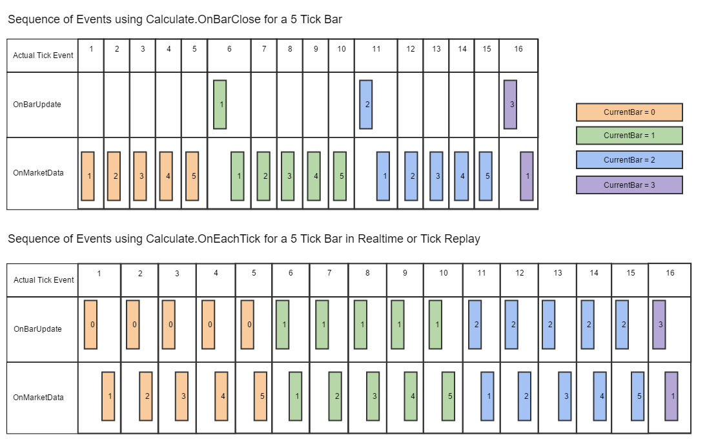

|
<< Click to Display Table of Contents >> Developing for Tick Replay |


|
Developing for Tick Replay
|
<< Click to Display Table of Contents >> Developing for Tick Replay |
|
Tick Replay is used to playback 1 tick historical data to build the bars as if they had been build live, this means that tick data will be thrown as Market Data events in historical and subsequently OnMarketData and OnBarUpdate events will be called as if it was live. This provides more granular tick related information and can be helpful if you need to know the most recent last price, last volume, best ask price, or best bid price that occurred on historical data during the bar. An indicator or strategy running Tick Replay needs to have been specifically designed to take advantage of Tick Replay. In general, this means adding additional logic to the OnMarketData() event handler, however, Tick Replay can also be used to call OnBarUpdate() "OnEachTick" or "OnPriceChange" during historical calculations.
Tick Replay guarantees an exact sequence of stored events are played back for both the OnBarUpdate and OnMarketData events. This mode also ensures the OnMarketData event is called after every OnBarUpdate event used to build the current bar. Consider the following examples with Tick Replay enabled on a 5-tick input series, each box is when each event occurs during Tick Replay simulation.

As you can see from the table above, the Calculate setting will have a varying degree of impact on how your indicator or strategies OnBarUpdate event is raised. This process repeats for every historical bar on the chart and would continue as the indicator or strategy transitions to real-time data.
NinjaTrader stores the best bid price and best ask price as the last trade occurs during the MarketDataType.Last event and provides it per the table below:
marketDataUpdate.Price |
The current market data price of the last trade event |
marketDataUpdate.Ask |
The current asking price at the time of the last trade event |
marketDataUpdate.Bid |
The current bidding price at the time of the last trade event |
marketDataUpdate.Volume |
The current market data volume of the last trade event |
marketDataUpdate.Time |
The current time of the last trade event |
An example below shows how to access historical Bid and Ask prices with Tick Replay
|
|---|
protected override void OnMarketData(MarketDataEventArgs marketDataUpdate) |
A hosting indicator or strategy must be aware of the requirement to run through another indicator's historical Tick Replay data before it reaches State.Historical. To achieve desired results, you either need to store the reference in State.DataLoaded or (for a strategy) you can call AddChartIndicator(). Either approach ensures that the hosting indicator or strategy is aware of the requirements to process Tick Replay during its State.Historical mode and helps to ensure that the hosted indicator calculates as designed up to its current bar using Tick Replay. Please see the example below.
|
|---|
TickReplayIndicator myTickReplayIndicator = null; |
Notes:
1.Tick Replay was NOT designed to provide accuracy in backtesting concerning order fills and execution and should NOT be used to expect the exact sequence of executions as running a strategy on live data. For greater order-fill resolution and accuracy in strategy backtesting, you can use the High Fill Resolution in the Strategy Analyzer. Furthermore you cannot combine both Tick Replay and High Order Fill resolution. 2.If the data provided has no bid/ask data tied to the last tick data, NinjaTrader substitutes the bid/ask data for consistent user experience purposes (i.e., Bid = Last price, Ask = Bid + 1 tick). For a list of providers who support tick replay, please see the table from Understanding the data provided by your connectivity provider. Only bid and ask price is made available, bid and ask volume is NOT available. 3.Tick Replay ONLY replays the Last market data event, and only stores the best inside bid/ask price at the time of the last trade event. You can think of this as the equivalent of the bid/ask price at the time a trade was reported. As such, historical bid/ask market data events (i..e, bid/ask volume) DO NOT work with Tick Replay. To obtain those values, you need to use a historical bid/ask series separately from Tick Replay through OnBarUpdate() 4.Tick Replay data is accessed via the MarketDataEventArgs object passed into OnMarketData() events, rather than attempting to access it via GetCurrentAsk() and GetCurrentBid(), which are methods designed to function on real-time data only 5.Due to the nature of how some unique bars build, Tick Replay is NOT available for all bar types. For example, the default Renko and LineBreak bars which use RemoveLastBar() are not compatible with Tick Replay. Other custom bar types which use similar methods encounter the same limitation 6.Tick Replay is forced for all series loaded, and there is NOT any method to reduce the number of calculations on a per series basis. In other words, you cannot mix and match tick replay series with non-tick replay series 7.Tick Replay was only ONLY designed to work with MarketDataType.Last. A TickReplay indicator or strategy should NOT be mixed with a MarketDataType.Ask or MarketDataType.Bid series 8.Tick Replay is not compatible with most Multi-Time Frame / Multi Instrument indicators, as there could be series synchronization issues leading to unexpected results. |